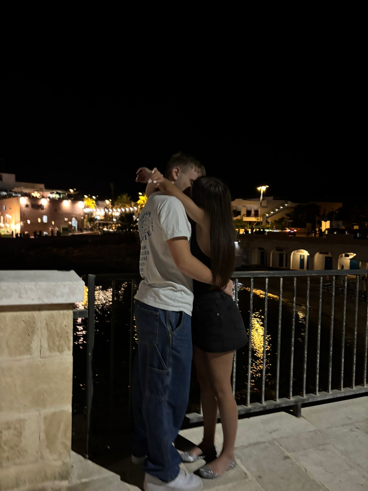
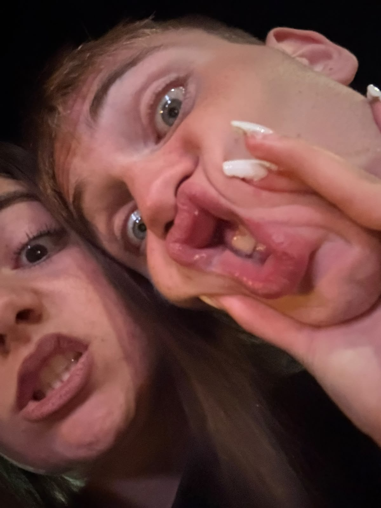
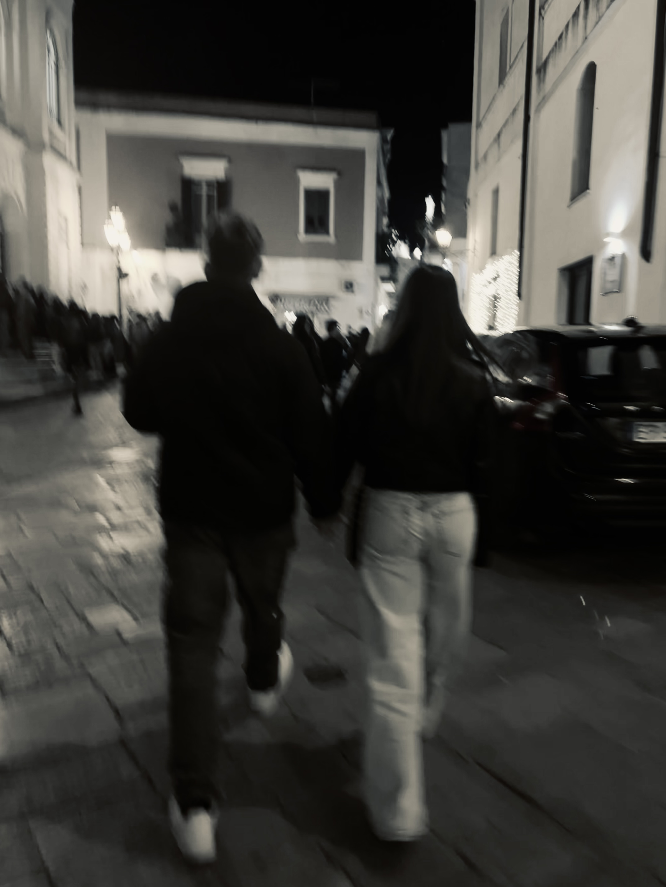

FINE MARZO
Il primo incontro
Era una domenica pomeriggio a Santa Caterina. Tra tante persone, i nostri sguardi si sono incrociati e tu sei stata quella che mi ha colpito di più. Ancora non sapevamo cosa sarebbe successo.
UN PICCOLO MONDO SOLO NOSTRO
Ci sono ricordi che meritano un posto speciale.
Anteprima con schermata password. Prima di pubblicarlo, configura una protezione reale seguendo LEGGIMI.txt.
MATTEO & SARA
E poi, quasi senza accorgersene, diventano qualcosa di speciale.
La nostra storiaun ricordo, mille emozioni
CAPITOLO 01
Non sapevamo ancora cosa sarebbe successo. Ma ogni storia, anche la più bella, comincia da qualche parte.
Era una domenica pomeriggio a Santa Caterina. Tra tante persone, i nostri sguardi si sono incrociati e tu sei stata quella che mi ha colpito di più. Ancora non sapevamo cosa sarebbe successo.
Qualche like, le note su Instagram e quella curiosità di conoscerci meglio. Piano piano qualcosa stava iniziando, anche se ancora nessuno dei due lo sapeva davvero.
Quella sera ho trovato il coraggio di scriverti e chiederti se ti andava di conoscerci. Un semplice messaggio che ha dato inizio a qualcosa che non avrei mai immaginato.
Da quel primo passo è cominciato il nostro percorso. Fatto di momenti, emozioni, sorrisi e ricordi che rendono unica la nostra storia.
CAPITOLO 02
Le foto non devono essere perfette. Devono farvi tornare lì.



Le storie più belle non si raccontano
in un solo giorno: si costruiscono un ricordo alla volta.
CAPITOLO 03 · DA MATTEO A SARA
Amore mio,
Ci tenevo che in questo sito ci fosse anche qualcosa che venisse direttamente da me, qualcosa che potessi leggere e che ti facesse capire perché ho voluto realizzare tutto questo.
Non è sempre facile riuscire a spiegare quello che provo e forse proprio per questo ho deciso di mettere insieme queste pagine. Volevo trovare un modo per farti vedere le cose dal mio punto di vista, per farti capire quanto siano importanti per me anche quei momenti che magari viviamo senza renderci conto di quanto siano belli.
Se penso a noi, mi viene da sorridere pensando a quanto tutto sia iniziato per caso. Non c'era nessun programma, nessuna certezza, soltanto due persone che piano piano hanno iniziato a conoscersi. E oggi, ripensando a quei primi momenti, mi fa strano pensare a quanta strada abbiamo fatto da allora.
Ci sono tante cose che vorrei riuscire a trasmetterti, ma soprattutto vorrei che sapessi che non do per scontato quello che abbiamo vissuto. Ogni momento ha il suo valore, anche quelli più normali, quelli di cui magari non facciamo nemmeno una fotografia.
Ho voluto creare M+S perché mi piaceva l'idea di avere un posto tutto nostro, dove poter conservare qualcosa che altrimenti rischierebbe di rimanere soltanto nei ricordi. Un posto in cui ogni fotografia racconta qualcosa e ogni pagina ha un motivo per esistere.
Non so quante altre pagine riempiremo, quante foto aggiungeremo o quanti ricordi ci aspettano. Ma so che quando tornerò qui, vorrò ricordarmi di come tutto è cominciato e di quanto significasse per me ogni singolo momento.
Se un giorno ti capiterà di rileggere queste parole, voglio soltanto che tu sappia una cosa: dietro questo piccolo sito c'è un ragazzo che ci ha messo tempo, pensieri e cuore, perché voleva regalarti qualcosa che fosse davvero vostro.
B.B. ♡